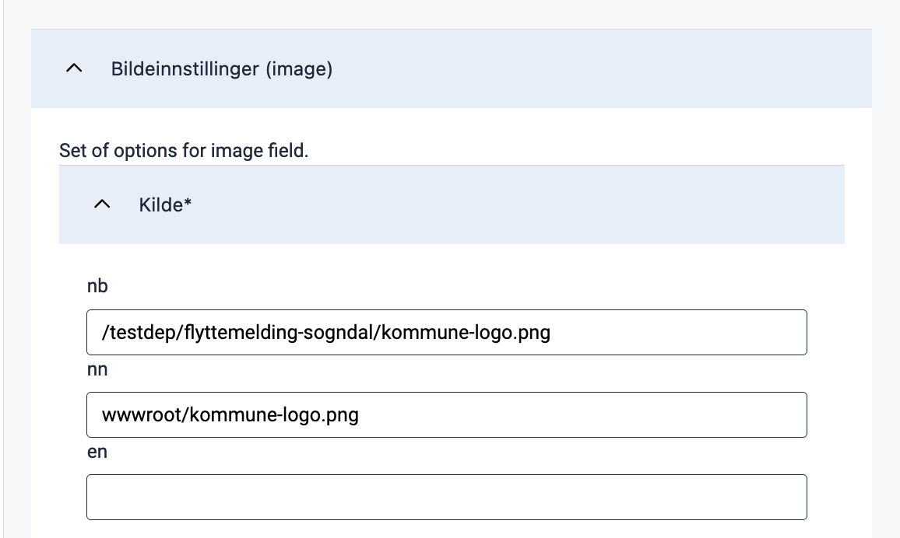

Image
Display visual content such as pictures, screenshots, illustrations, or graphics
Usage
Use images and illustrations to emphasize points or illustrate concepts that are difficult to explain using text.
This component can be used standalone or as a media component in Cards.
Anatomy

- Image: Photo, screenshot, illustration, or graphic.
- Alternative text: Used by screen readers and displayed if the image can not be rendered.
Best practices
We recommend following the guidelines by UUtilsynet.
- Add an alternative text which explains the image. The alt. text will be displayed if the image is unavailable and is used by screen readers.
- If an image is purely decorative, it’s best not to include an alternative text.
- Don’t use images for image’s sake. Ask yourself if the image illustrates a point or increases the understanding of what you are trying to tell.
- Check if the image scales well on devices like mobile or tablet. An image which looks good on a PC can quickly fill a smaller screen.
- Avoid using images instead of text, as screen readers cannot read it.
Content guidelines
Keep alternative texts consistent:
- Never start with “Image of …”
- Write short and start with the most essential part of the image.
- End by saying if the photo is an illustration or graphic.
Example

Alt text: “Old wooden trolley. Photograph.”
For more guidelines and examples, see UUtilsynet.
Properties
The following is an autogenerated list of the properties available for Image based on the component’s JSON schema file (linked below).
Required properties: id,type,src,width,align
| Property | Type | Description |
|---|---|---|
|
string | The component ID. Must be unique within all layouts/pages in a layout-set. Cannot end with <dash><number>. |
|
string | The component type. |
|
object | Text resource bindings for a component. |
textResourceBindings.altTextImg |
string | Alternate text is read aloud to someone using assistive technology, but is hidden from a sighted user. |
|
string | Align image Enum: [flex-start, center, flex-end, space-between, space-around, space-evenly] |
|
object | Settings for the components grid. Used for controlling horizontal alignment. Example(s): {xs: 12} |
gridSettings.innerGrid |
gridProps | Optional grid for inner component content like input field or dropdown. Used to avoid inner content filling the component width. Example(s): {xs: 12}See: gridProps |
gridSettings.labelGrid |
gridProps | Optional grid for the component label. Used in combination with innerGrid to align labels on the side. Example(s): {xs: 12}See: gridProps |
|
boolean | Boolean value or expression indicating if the component should be hidden. Defaults to false. |
|
object | |
pageBreak.breakAfter |
string | PDF only: Value or expression indicating whether a page break should be added after the component. Can be either: 'auto' (default), 'always', or 'avoid'. Example(s): auto,always,avoid |
pageBreak.breakBefore |
string | PDF only: Value or expression indicating whether a page break should be added before the component. Can be either: 'auto' (default), 'always', or 'avoid'. Example(s): auto,always,avoid |
|
boolean | Boolean or expression indicating if the component should be rendered as a summary. Defaults to false. |
|
object | Image source |
src.en |
string | English |
src.nb |
string | Bokmål |
src.nn |
string | Nynorsk |
|
string | Image width Example(s): 100% |
Configuration
Add component
Basic image component:
App/ui/layouts/{page}.json
{
"$schema": "https://altinncdn.no/toolkits/altinn-app-frontend/4/schemas/json/layout/layout.schema.v1.json",
"data": {
"layout": [
{
"id": "komponent-id",
"type": "Image",
"image": {
"src": {
"en": "https://example.com/image.jpg",
"nb": "/org/app/assets/image.png"
},
"width": "100%",
"align": "center"
}
}
]
}
}
Alternative text (textResourceBindings.altTextImg)
Choose ‘Alternativ tekst for bilde’ in the drop-down menu.

Click the plus sign to create a new text or the magnifying glass to pick an existing text resource.

Corresponding settings in the page’s JSON file.
App/ui/layouts/{page}.json
{
"data": {
"layout": [
{
"id": "kommune-logo",
"type": "Image",
"textResourceBindings": {
"altTextImg": ""
},
...
}
]
}
}
Image settings (image)
Image source (image.src)
The default source is nb; any language that does not define a separate image source will use this source.
List another language code and image source to add a source, as in the example below.
Available language sources are en (English), nb (Norwegian Bokmål), and nn (Norwegian Nynorsk).

App/ui/layouts/{page}.json
{
"id": "kommune-logo",
"type": "Image",
"image": {
"src": {
"nb": "/testdep/flyttemelding-sogndal/kommune-logo.png",
"nn": "wwwroot/kommune-logo.png"
},
...
}
}
The image source may be external or local to the app.
For external images, the source is the image URL (e.g. https://examples.com/myImage.png).
To host an image in the application, place it in the folder App/wwwroot (if the folder does not exist, you can create it).
Static hosting must be configured manually for apps created before December 2021.
An image placed in App/wwwroot can be referenced in the following ways:
- Using its relative URL:
/<org or username>/<app-name>/image.pngor - Using the image path:
wwwroot/image.png. The path will resolve to the image’s relative URL before the image is loaded.
Configure static hosting
For apps created before December 2021, static hosting must be configured manually by adding the line
app.UseStaticFiles('/' + applicationId); in the Configure method in App/Program.cs as shown below:
App/Program.cs
void Configure()
{
...
app.UseRouting();
app.UseStaticFiles('/' + applicationId);
app.UseAuthentication();
...
}
applicationId is the same as id in App/configApplicationmetadata.json.
Width and alignment (image.width, image.align)
By using width, you can adjust the image size by specifying the width of the image in percentage.
The height is automatically set to maintain proportions. The default setting is 100% (original width).
The property align controls the horizontal position of the image relative to the container.

App/ui/layouts/{page}.json
{
"data": {
"layout": [
{
"id": "kommune-logo",
"type": "Image",
"textResourceBindings": {
"altTextImg": "kommune-logo.altTextImg"
},
"image": {
"src": {
"nb": "wwwroot/kommune-logo.png",
},
"width": "100%",
"align": "center"
}
}
]
}
}
The following options are available for positioning:
flex-start: Left-alignedcenter: Centeredflex-end: Right-alignedspace-between: The elements are evenly distributed horizontally, with equal spacing between each element and no spacing at the start and end.space-around: The elements are evenly distributed horizontally with equal spacing between each element, including spacing at the start and end, which is half the spacing between the elements.space-evenly: The elements are evenly distributed horizontally with equal spacing between each element, including at the start and end, so that the total spacing is evenly distributed.
Summary (renderAsSummary)
Indicates whether the field should be included in a summary or not (default: false).

{
"id": "komponent-id",
...
"renderAsSummary": false
}
Hidden (hidden)
Indicates whether the field should be hidden or not (default: false).

App/ui/layouts/{page}.json
{
"id": "komponent-id",
...
"hidden": false
}
Page Break (pageBreak)
Indicates whether a page break should be added before or after the component. Can be either: auto (default), always, or avoid.

App/ui/layouts/{page}.json
{
"id": "komponent-id",
...
"pageBreak": {
"breakBefore": "auto",
"breakAfter": "auto"
}
}
Horizontal alignment with grid
grid settings are not yet supported in the form editor but can be configured manually.The grid property controls horizontal alignment based on a 12-column layout.
Items are allocated fractions of 12 which sets their width relative to the screen width.
In the example below, we set the component’s width to 2/12 of the screen width for all screen sizes (from xs and up).
App/ui/layouts/{page}.json
{
"id": "komponent-id",
...
"grid": {
"xs": 2,
}
}
You can also use grid to place items side by side.
See Components placed side by side (grid) for details and examples.